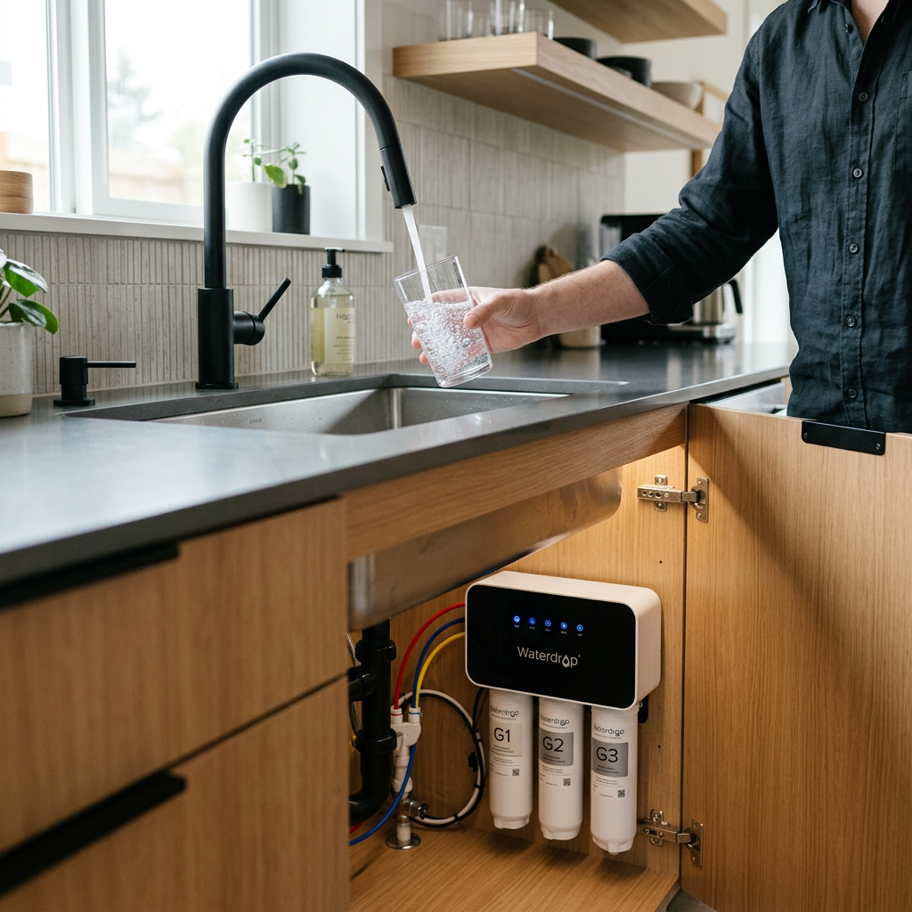
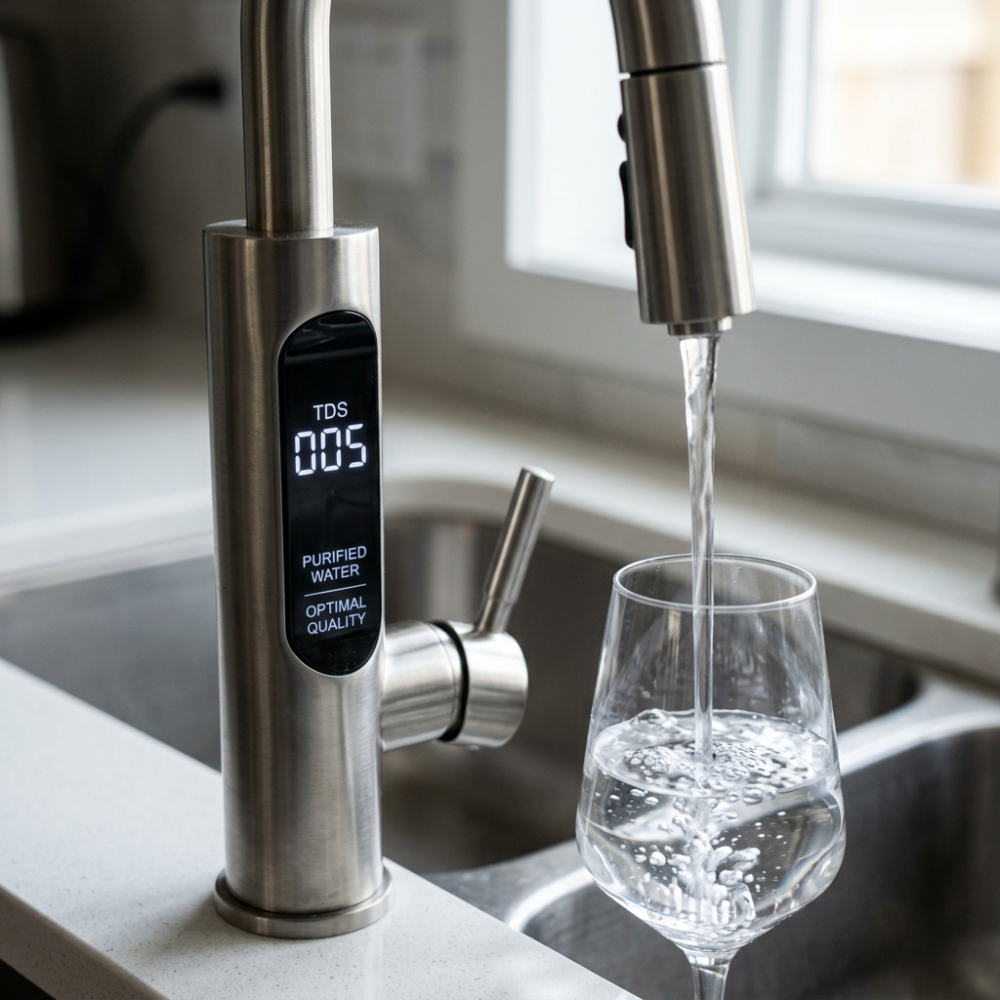
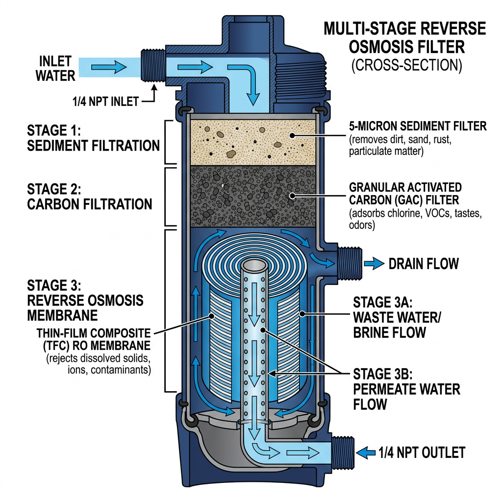

Best Waterdrop Under Sink Filter: The 2024 Guide to Tankless Reverse Osmosis
Best Waterdrop Under Sink Filter: The 2024 Guide to Tankless Reverse Osmosis
Is your tap water truly safe? Despite what local utilities claim, aging pipes and industrial runoff often leave traces of lead, fluoride, and 'forever chemicals' like PFAS in your glass. If you are tired of bulky, slow-dripping filtration systems that take up your entire cabinet, it is time for a change. A high-quality waterdrop under sink filter provides the ultimate solution: pure, crisp water on demand without the bulky tank.
As a conversion specialist, I have analyzed the technical specifications and user feedback of the top-tier Waterdrop models. These systems aren't just filters; they are health investments that utilize advanced membrane technology to ensure every drop is purified to 0.0001 microns.

Quick Comparison: Top Waterdrop Under Sink Filter Systems
Before we dive into the deep reviews, use this comparison table to identify which model fits your household's daily water consumption and filtration needs.
| Product Name | Flow Rate (GPD) | Drain Ratio | Filtration Stages | Verdict |
|---|---|---|---|---|
| Waterdrop G3P800 | 800 GPD | 3:1 | 9-Stage | The Powerhouse Performance |
| Waterdrop G2P600 | 600 GPD | 2:1 | 7-Stage | The Balanced Best-Seller |
| Waterdrop G2P600 Special Edition | 600 GPD | 2:1 | 7-Stage (Enhanced) | Premium Aesthetics & Value |
1. Waterdrop G3P800: The Flagship Powerhouse
The Waterdrop G3P800 is the gold standard for high-demand households. If you have a large family or frequently host guests, the 800 GPD (Gallons Per Day) capacity ensures you never have to wait for your glass to fill. It fills a cup in just 6 seconds.
Why the G3P800 Wins:
- 9-Stage Filtration: It effectively reduces over 1,000 contaminants, including heavy metals, PFAS, and bacteria.
- Extreme Efficiency: With a 3:1 pure-to-drain ratio, this model is one of the most eco-friendly options on the market, wasting significantly less water than traditional RO systems.
- Smart Faucet: The included faucet displays real-time TDS (Total Dissolved Solids) and filter life status.

2. Waterdrop G2P600: The Versatile All-Rounder
If you need a reliable waterdrop under sink filter that balances price and performance, the G2P600 is the industry favorite. It provides 600 gallons of purified water per day, which is more than enough for most 4-person households.
Key Benefits:
- 7-Stage Deep Filtration: Features a composite filter design that removes scale, chlorine, and heavy metals.
- Tankless Space-Saving: Its slim profile (only 5.7 inches wide) leaves plenty of room for your cleaning supplies and trash bin.
- Quick Installation: Most users can install the G2P600 in under 30 minutes thanks to its integrated waterway design.
3. Waterdrop G2P600 Special Edition: Style Meets Substance
The Waterdrop G2P600 Special Edition takes the proven reliability of the G2 platform and adds premium touches. It is designed for those who want a specific aesthetic or slightly enhanced filtration components for challenging water conditions.
What Makes the SE Different?
- Enhanced Filter Life: The Special Edition often features optimized filter materials that extend the interval between replacements.
- Modern Finish: Designed to look as good as it performs, fitting perfectly into luxury kitchen setups.
- Quiet Operation: Advanced internal pump insulation makes this one of the quietest tankless RO systems available.

Final Verdict: Which Waterdrop Under Sink Filter Should You Choose?
Choosing the right waterdrop under sink filter comes down to your specific needs:
- Choose the G3P800 if you want the fastest flow rate, the highest water efficiency, and the most advanced filtration stages currently possible in a residential unit.
- Choose the G2P600 if you want the best value for your money. It offers professional-grade filtration with a compact footprint that fits almost any kitchen.
- Choose the G2P600 Special Edition if you want the reliability of the G2 series with a more premium feel and potentially longer-lasting filter components.
Stop settling for mediocre tap water. By switching to a tankless Waterdrop system, you are choosing health, convenience, and sustainability. Every model listed here is backed by rigorous testing and thousands of satisfied customers.